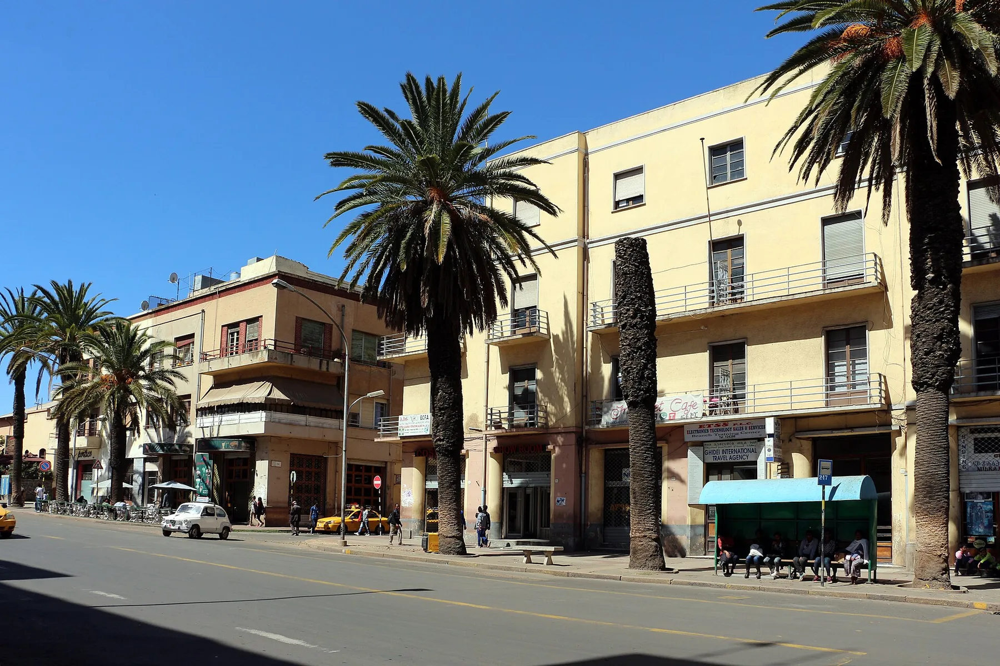

Guided journeys to Eritrea
Come home to Eritrea
One journey, arranged end to end by people who know the road, and confirmed with you personally.

Harnet Avenue, Asmara2,325 mabove the sea


Request-based, with no automatic charges. Your journey is arranged only when someone at ATA confirms it to you. No payment is taken through this website.
Before you land
Who is coming home this time?
A return is never the same twice. Choose the one closest to yours and this page leans toward it.
Morning · Asmara
A planned modernist city, built to be walked
Asmara sits on Eritrea's central highland plateau at about 2,325 metres, where the air stays cool even in the sun. Its historic centre is a near-complete early modernist city, laid out between 1893 and 1941 and inscribed on the UNESCO World Heritage List in 2017 as Asmara: A Modernist African City.
 Fiat Tagliero, Asmara
Fiat Tagliero, AsmaraMidday · The escarpment
land opens to the sea
About 2,300 metres of descent
Between Asmara and Massawa the road falls from the highland plateau to sea level in switchbacks. The country changes as you go, from highland terraces to dry slopes to the coastal plain and the salt light of the sea.
It is a long stretch in the vehicle, with continuous curves. ATA will talk you through the day.
 On the road down to the coast
On the road down to the coastEvening · Massawa
Coral stone, salt air, and a harbour with many layers
Massawa is Eritrea's Red Sea port, and its old town sits on a coral island. Ottoman, Egyptian and Italian builders each left their mark, much of it cut from reef coral. The independence war left its mark too, and parts of the old town still stand as ruins. It is hot, quiet and close to the opposite of Asmara.
 Massawa old town
Massawa old townAsk us about
More of Eritrea, if you have the time
Many returns include a day or two beyond the main route. Tell us what you remember or have been told about, and we will talk it through.
 Keren
KerenYour journey in outline
How a guided return could unfold
Tap a step to open it. Dates, prices and inclusions are shared personally by ATA once we know who is travelling.
Who you are dealing with
Plain commitments, in plain words
A person replies to you
Every request is answered by someone at ATA, not an automated system.
Sending a request books nothing
Your journey is arranged only when someone at ATA confirms it to you directly.
No payment through the website
Price on request: ATA prepares a personal quote. Travel dates are confirmed personally.
Start the conversation
Tell us about your return
It costs nothing and books nothing. A person at ATA replies to you directly.